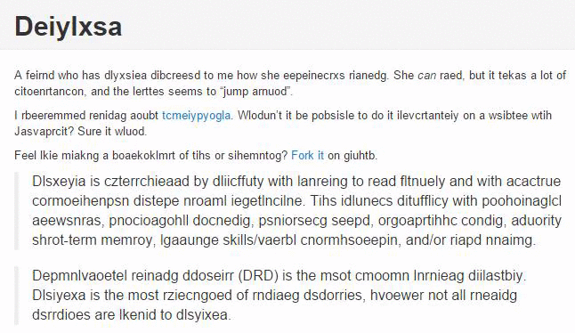

Dyslexia
Dyslexia is a language processing disorder that impacts reading, writing, and comprehension. Dyslexics may
exhibit
difficulty decoding words or with phonemic awareness, identifying individual sounds within words. Dyslexia often
goes diagnosed for many years and often results in trouble with reading, grammar, reading comprehension, and
other
language skills.
Signs and Symptoms
Dyslexia impacts people in different ways. So, symptoms might not look the same from one person to another. A
key
sign of dyslexia is trouble decoding words. This is the ability to match letters to sounds. Kids can also
struggle
with a more basic skill called phonemic awareness. This is the ability to recognize the sounds in words. Trouble
with phonemic awareness can show up as early as preschool.
Possible Causes of Dyslexia
Researchers haven't yet pinpointed exactly what causes dyslexia. But they do know that genes and brain
differences
play a role. Here are some of the possible causes of dyslexia:
-
Genes and heredity: Dyslexia often runs in families. About 40 percent of siblings of people with
dyslexia also
struggle with reading. As many as 49 percent of parents of kids with dyslexia have it, too. Scientists
have also
found genes linked to problems with reading and processing language.
-
Brain anatomy and activity: Brain imaging studies have shown brain differences between people
with and without
dyslexia. These differences happen in areas of the brain involved with key reading skills. Those skills
are
knowing how sounds are represented in words, and recognizing what written words look like.
How reading with Dyslexia looks like?
